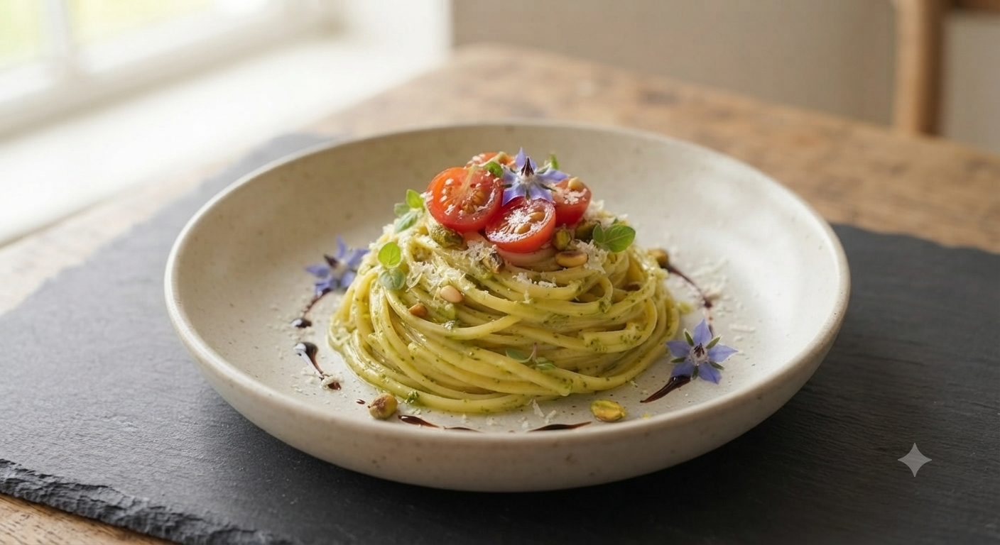
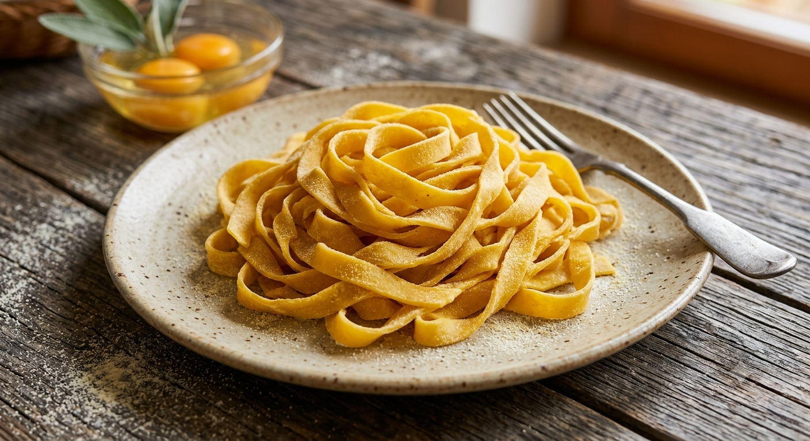
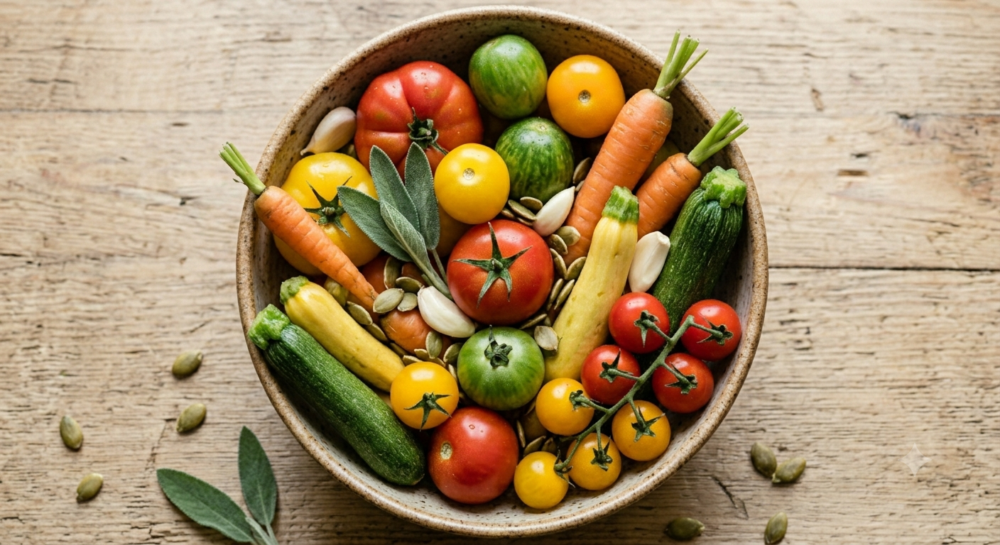
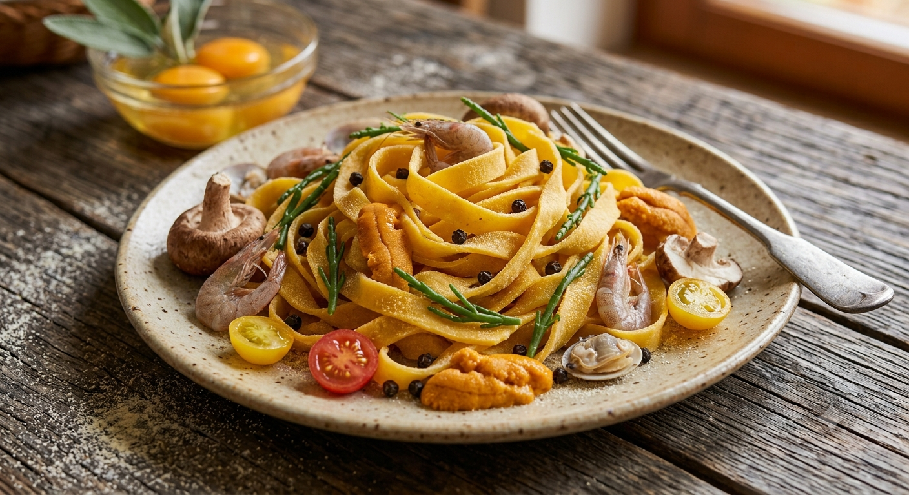

IL CUORE
Italian Restaurant
創業三十年、愛され続ける理由がここにあります。
岩手県花巻市、松園町。静かな街並みに佇む「イル・クオーレ」は、創業以来三十年、地元の豊かな食材と共に歩んできました。
オーナーシェフ雫石剛が自ら農家に足を運び、その日最も輝いている旬を厳選。伝統的なイタリアンの技法に、花巻の風土というエッセンスを加えた、唯一無二の料理をお届けします。


シェフ自らが週に一度は農家を訪れ、作物の息吹を確かめます。白ナス、枝豆、そして芳醇なキノコ。花巻の土が育んだ恵みを、そのまま皿の上へ。

創業から守り続ける、自家製生パスタのモチモチとした食感。ソースとの絡みを計算し尽くした、職人の手仕事が光る逸品です。
店内の各テーブルに、その日のパスタに使われている食材のこだわりや、花巻の農家さんの想いを綴った小さな「卓上ポップ（ヒストリーカード）」を順次設置予定です。
「白ナスと枝豆の物語」
「今朝採れたての白ナスは、松園町の〇〇さんが手塩にかけて育てた逸品。皮が柔らかく、火を通すととろけるような甘みに…」
※卓上に置かれたカードを読みながら、料理への期待が高まる新しい体験をお届けします。
アレルギー食材が入っていることに気づいた瞬間、
店員さんがすぐに察して、
別のパスタを無料で作り直してくださいました。
まさに「本物」のホスピタリティです。
5.0 ★★★★★
Google Reviews
「故郷・花巻に愛されるレストランを。」
東京・イタリアでの修行を経て、1994年に開業。雫石の地を治めていた先祖の歴史を背負い、シェフ雫石剛は今日も厨房に立ち続けます。FM花巻やテレビ岩手等、メディアでも紹介されるその味を、ぜひ一度。